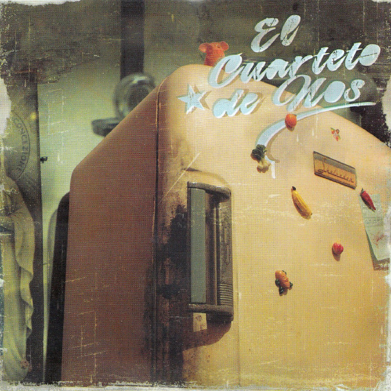

Biografía de El Cuarteto de Nos
El Cuarteto de Nos nace a mediados de los 80 y en los 90 se consolida como una de las bandas más significativas del rock uruguayo. Irreverentes, con humor negro, música de todos los estilos, desafiantes y con una actitiud punk llevada al humor y a la creación de personajes extraños de ficción.
¿Quienes Son los Integrantes de El Cuarteto de Nos?

Roberto Musso

Gustavo Antuña

Santiago Marrero

Santiago Tavella

Álvaro Pintos
Álbumes Destacados
Álbum: Lamina Once [2022]

01 - Flan. Voz: Roberto Musso. Duracion: 03:57.
02 - Rorschach. Voz: Roberto Musso. Duracion: 03:58.
03 - Frankenstein Posmo. Voz: Roberto Musso. Duracion: 04:14.
04 - Maldito Show. Voz: Roberto Musso. Duracion: 04:08.
05 - Chivo Expiatorio. Voz: Roberto Musso. Duracion: 04:49.
06 - Fiesta en lo del Dr. Hermes. Voz: Roberto Musso. Duracion: 04:16.
07 - Cinturón Gris. Voz: Roberto Musso. Duracion: 03:46.
08 - La Ciudad Sin Alma. Voz: Roberto Musso. Duracion: 03:52.
Álbum: Jueves [2019]
01 - Mario Neta. Voz: Roberto Musso. Duración: 04:24.
02 - Punta Cana. Voz: Roberto Musso. Duración: 03:19.
03 - Anónimo. Voz: Roberto Musso. Duración: 03:34.
04 - Hombre Con Alas. Voz: Roberto Musso. Duración: 04:20.
05 - Tiburones en el Bosque. Voz: Roberto Musso. Duración: 03:49.
06 - Que Empiece el Juego. Voz: Roberto Musso. Duración: 03:40.
07 - Llegó Papá. Voz: Roberto Musso. Duración: 03:50.
08 - Contrapunto para Humano y Computadora. Voz: Roberto Musso.
Duración: 03:52.
09 - Fallaste Nostradamus. Voz: Roberto Musso. Duración: 03:34.
Álbum: Apocalipsis Zombi [2017]
01 - Apocalipsis Zombi. Voz: Roberto Musso. Duración: 03:33.
02 - Invisible. Voz: Santiago Tavella & Roberto Musso. Duración: 03:36.
03 - El Innombrable. Voz: Roberto Musso. Duración: 03:35.
04 - Calma Vladimir. Voz: Roberto Musso. Duración: 03:23.
05 - Gaucho Power. Voz: Roberto Musso. Duración: 03:20.
06 - Mirada de Nylon. Voz: Roberto Musso. Duración: 03:31.
07 - Hola Karma. Voz: Roberto Musso. Duración: 03:49.
08 - La Bestia. Voz: Roberto Musso. Duración: 03:31.
09 - Nombres. Voz: Roberto Musso. Duración: 03:28.
10 - El Rey y el As. Voz: Roberto Musso. Duración: 04:03.
Álbum: Habla Tu Espejo [2014]
01 - Cómo pasa el tiempo. Voz: Roberto Musso. Duración: 4:20.
02 - El aprendiz. Voz: Roberto Musso. Duración: 3:56.
03 - No llora. Voz: Roberto Musso. Duración: 4:19.
04 - De hielo Voz: Roberto Musso. Duración: 4:12.
05 - Roberto. Voz: Roberto Musso. Duración: 4:09.
06 - 21 de septiembre. Voz: Roberto Musso. Duración: 3:56.
07 - Whisky en Uruguay. Voz: Santiago Tavella. Duración: 3:09.
08 - Habla tu espejo Voz: Roberto Musso. Duración: 4:38.
09 - Caminamos. Voz: Roberto Musso. Duración: 3:31.
10 - Un problema menos. Voz: Roberto Musso. Duración: 3:34.
Álbum: Porfiado [2012]

01 - Algo Mejor Que Hacer. Voz: Roberto Musso. Duración: 3:21.
02 - Cuando Sea Grande. Voz: Roberto Musso. Duración: 4:09.
03 - Sólo Estoy Sobreviviendo. Voz: Roberto Musso. Duración: 4:27.
04 - Buen Día Benito. Voz: Roberto Musso. Duración: 3:50.
05 - El Lado Soleado De La Calle. Voz: Roberto Musso. Duración: 4:10.
06 - Lo Malo de Ser Bueno. Voz: Roberto Musso. Duración: 4:02.
07 - Enamorado Tuyo. Voz: Santiago Tavella. Duración: 4:19.
08 - El Balcón De Paul. Voz: Roberto Musso. Duración: 3:54.
09 - Vida Ingrata. Voz: Roberto Musso. Duración: 3:57.
10 - No Te Invité A Mi Cumpleaños. Voz: Santiago Tavella.
Duración: 4:13.
11 - Insaciable. Voz: Roberto Musso. Duración: 3:50.
12 - Todos Pasan Por Mi Rancho. Voz: Roberto Musso. Duración: 5:09.
Álbum: Bipolar [2009]

01 - Bipolar. Voz: Roberto Musso. Duración: 4:06.
02 - Miguel Gritar. Voz: Roberto Musso. Duración: 3:40.
03 - El Hijo de Hernández. Voz: Roberto Musso. Duración: 3:51.
04 - Malherido. Voz: Roberto Musso. Duración: 3:29.
05 - Nada Me Da Satisfacción. Voz: Roberto Musso. Duración: 3:58.
06 - Mi Lista Negra. Voz: Roberto Musso. Duración: 4:19.
07 - Doble Identidad. Voz: Roberto Musso. Duración: 4:04.
08 - Mírenme (Ft. Santullo). Voz: Roberto Musso. Duración: 3:31.
09 - Primavera. Voz: Santiago Tavella. Duración: 4:36.
10 - Razones. Voz: Roberto Musso. Duración: 3:56.
11 - Me Amo. Voz: Roberto Musso. Duración: 3:38.
12 - Breve Descripción de Mi Persona. Voz: Roberto Musso.
Duración: 4:08.
Álbum Más Famoso de El Cuarteto de Nos:
Álbum: Raro [2006]
01 - Nada es gratis en la vida. Voz: Roberto Musso. Duracion: 03:47.
02 - Hoy estoy raro. Voz: Roberto Musso. Duracion: 04:40.
03 - Así soy yo. Voz: Roberto Musso. Duracion: 03:45.
04 - Yendo a la casa de Damián. Voz: Roberto Musso.
Duracion: 04:14.
05 - Pobre papá. Voz: Santiago Tavella. Duracion: 02:59.
06 - Ya no sé qué hacer conmigo. Voz: Roberto Musso.
Duracion: 04:01.
07 - Natural. Voz: Roberto Musso. Duracion: 02:37.
08 - Invierno del 92. Voz: Roberto Musso. Duracion: 03:59.
09 - El karaoke de mi noviecita. Voz: Santiago Tavella.
Duracion: 04:22.
10 - Me hace bien, me hace mal. Voz: Roberto Musso.
Duracion: 03:55.
11 - Pueblo podrido. Voz: Roberto Musso. Duracion: 02:31.
12 - Autos nuevos. Voz: Ricardo Musso. Duracion: 04:12.
Álbum: El Cuarteto de Nos [2004]
01 - Hay Que Comer. Voz: Roberto Musso. Duración: 3:22.
02 - Sólo Un Rumor. Voz: Roberto Musso. Duración: 3:39.
03 - Al Cielo No. Voz: Roberto Musso. Duración: 3:35.
04 - Bo Cartero. Voz: Roberto Musso. Duración: 3:42.
05 - No Quiero Ser Normal. Voz: Roberto Musso. Duración: 3:38.
06 - Nuevamente. Voz: Santiago Tavella. Duración: 2:11.
07 - El Putón del Barrio. Voz: Roberto Musso. Duración: 2:28.
08 - Ya Te Vas a Mejorar. Voz: Ricardo Musso. Duración: 2:47.
09 - Vino en Mi Jeringa. Voz: Roberto Musso. Duración: 3:36.
10 - Corazón Maricón. Voz: Santiago Tavella. Duración: 3:06.
11 - Canción de Amor. Voz: Roberto Musso. Duración: 3:09.
12 - Fui Yo. Voz: Santiago Tavella. Duración: 3:42.
13 - Manfreddi. Voz: Ricardo Musso. Duración: 2:48.
14 - Eres una Chica Muy Bonita. Voz: Santiago Tavella. Duración: 3:34.
15 - Soy Un Capón. Voz: Ricardo Musso. Duración: 3:36.
16 - El Día que Artigas se Emborrachó. Voz: Roberto Musso.
Duración: 2:53.
17 - Siempre Que Escucho Al Cuarteto. Voz: Santiago Tavella.
Duración: 3:53.
18 - Me Agarré el Pitito Con el Cierre. Voz: Roberto Musso.
Duración: 3:25.